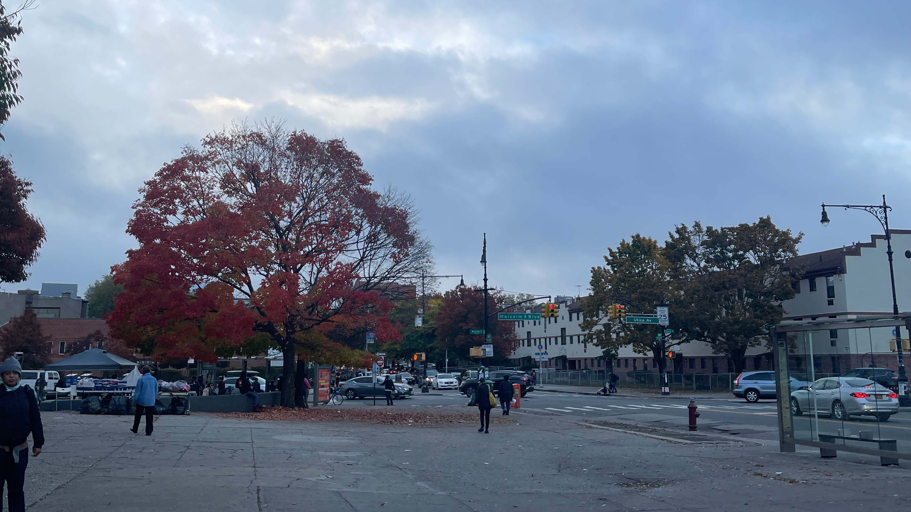
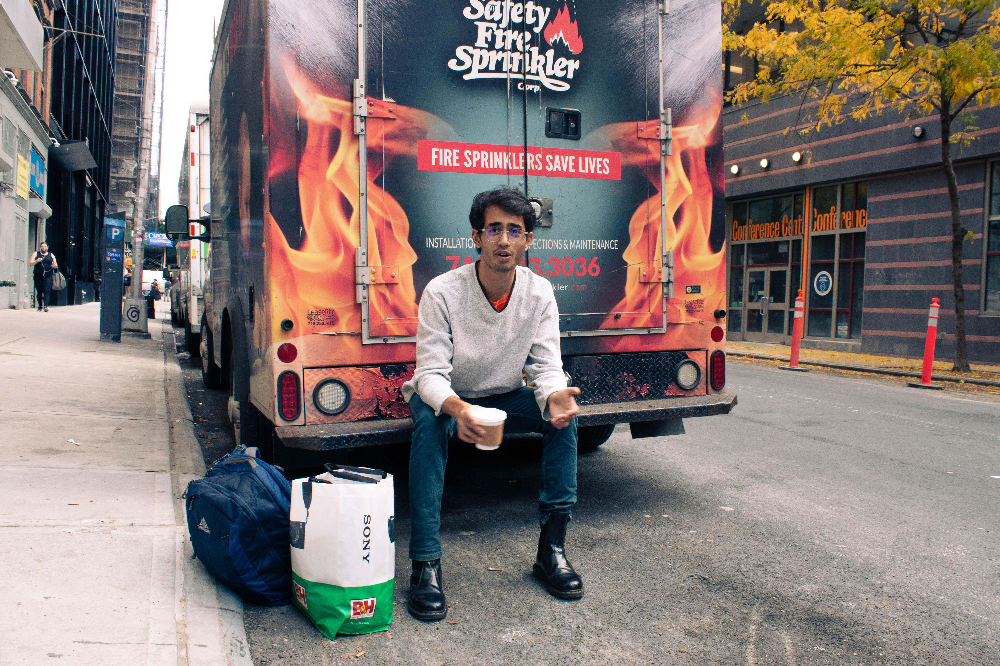
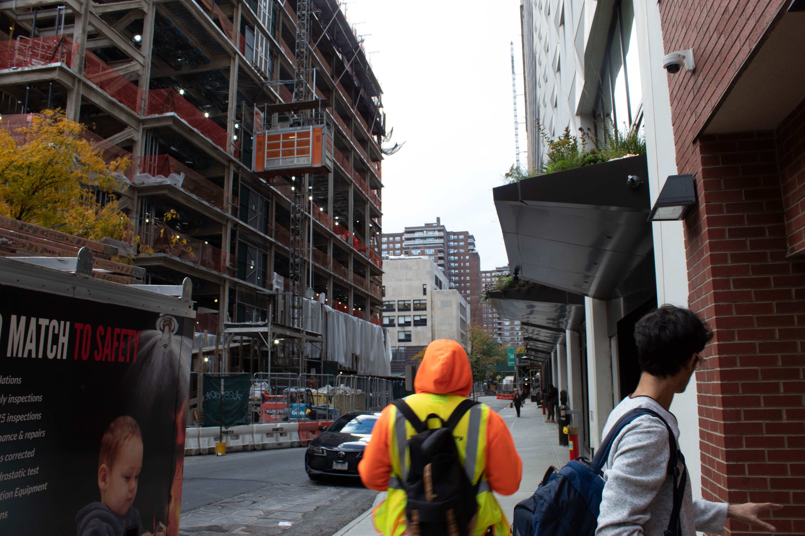
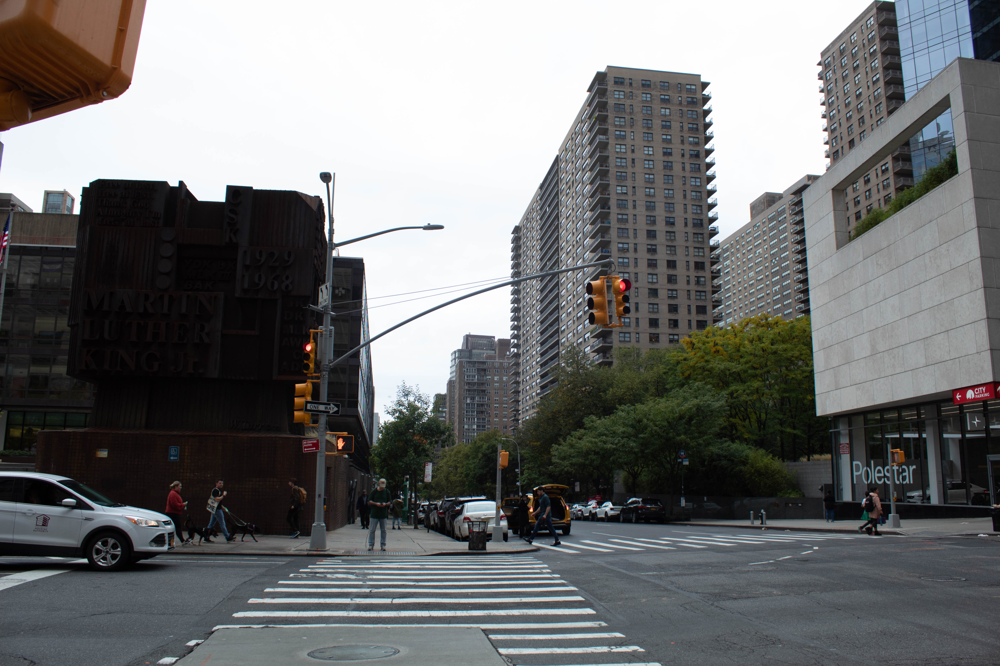
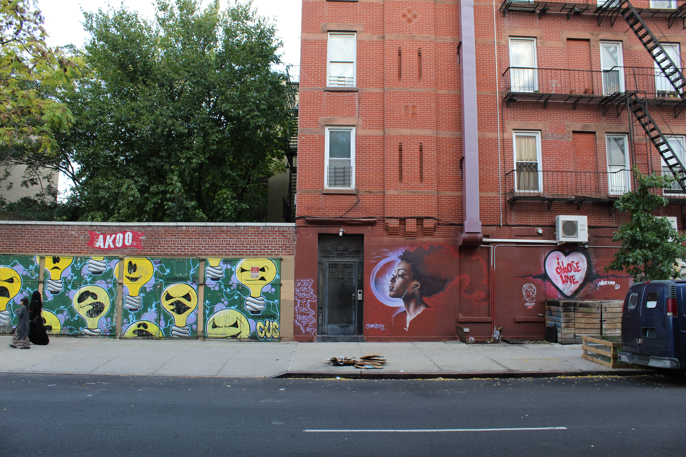
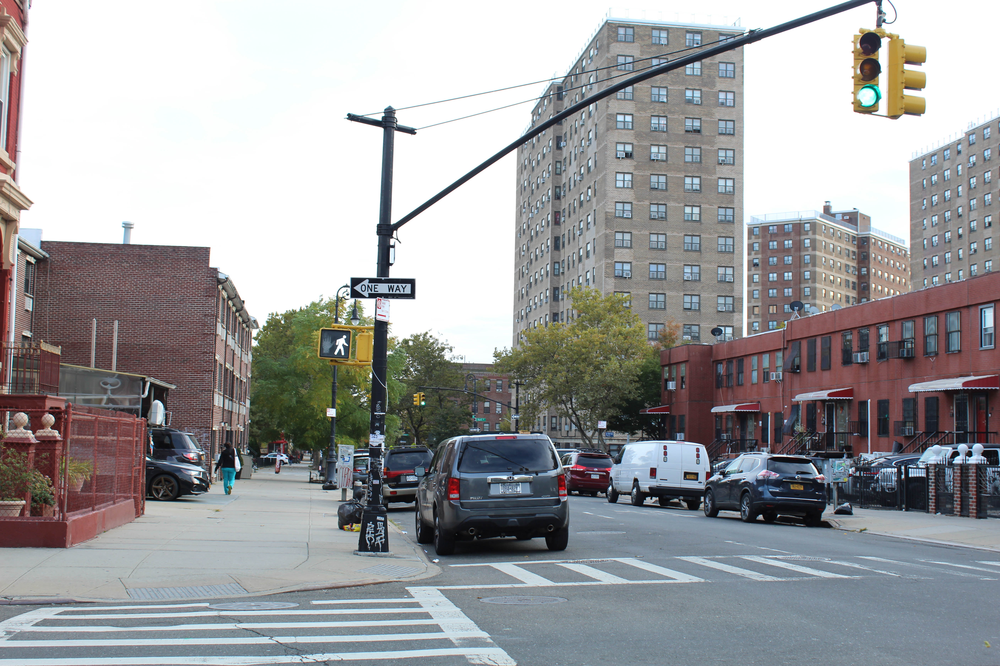
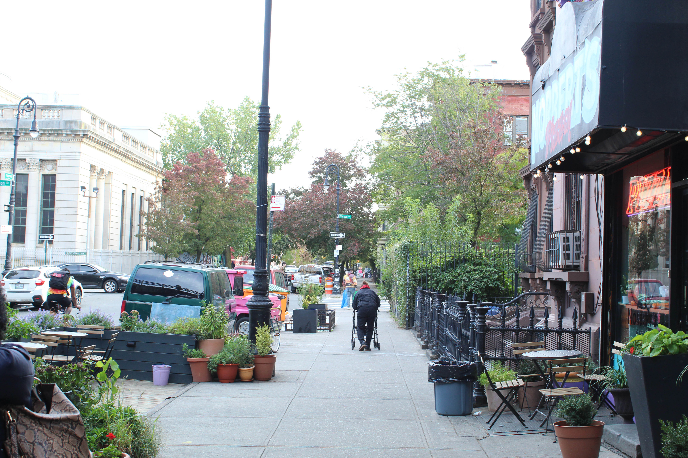

|  | Establishing shot of one of NYC's poor neighborhoods. - Bedstuy. This introduces the area of NYC and establishes the feel of the documentary. Time: 5s. Effect: Fade-in |
|  | Introduce to the character/ narrator, who’s going to touch a little bit on the problem. Shot in Chelsea, Manhattan. Showing a day-to-day park activity. Could look for more angles. Time: 20-30s. |
|  | The character walks up. The camera follows him from outside his location to the nearest park. With narration in the background. Could look for more angles. Time: 20-30s. |
|  | Showing of one of the park-green areas in the Upper West Side. Establishing the first part of the argument. Time: 30-40s. |
|  | Abrupt cut to a different part of the city, one with more lower-income families. Showing the strong difference in feel and presentation between the two locations. Time: 5s. |
|  | Showing the situation in these poorer communities, with intercuts and multiple different locations. Narrating deeper into the problem, and introducing the agents of change. Time: 60s. |
| A shot of the agents of change through zoom, discussing the solutions to the problem and the hopeful outcome. time: 20s. | |
|  | Ending the shot with a bright outlook on one of Brooklyn’s poorer Areas. Showing trees and greens, representing a hopeful future. Time: 10s. Effect: Fade-out. |